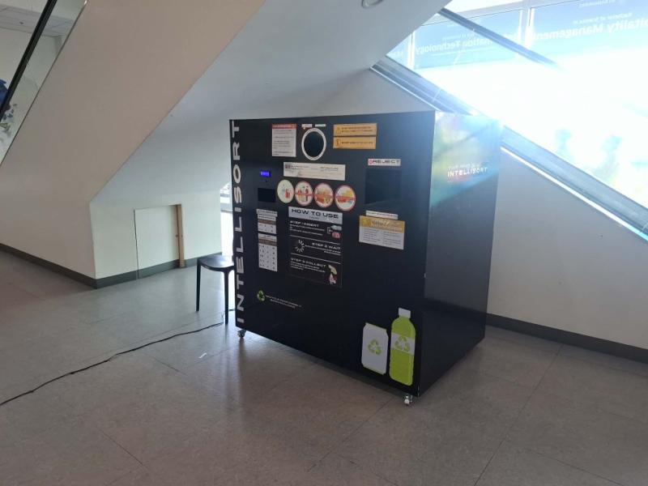
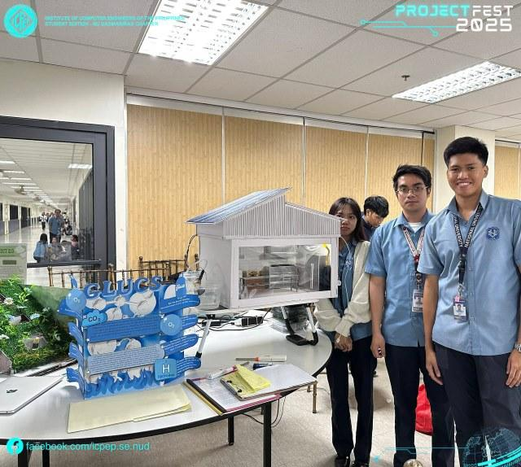
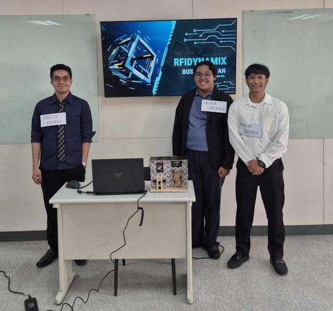

Academic Projects
Engineering solutions integrating Machine Learning, IoT, and Security.

INTELLISORT
An AI-powered reverse vending machine that uses a CNN model to automatically classify PET bottles and aluminum cans, sort them, and reward users with coins. Integrated with embedded systems and IoT monitoring, it promotes efficient waste segregation and incentivizes sustainable recycling.

GLUCS
An IoT-based gas leak, smoke, and fire detection system using an ESP32 with MQ-2 and flame sensors. It enhances safety by automatically triggering alarms, ventilation, gas shutoff, and fire suppression, with real-time monitoring and control via the Blynk platform.

RFIDynamiX
An RFID-based smart building system that automates access control and environment management, including lighting and HVAC systems. It improves security, energy efficiency, and convenience while supporting scalable smart infrastructure through IoT integration.
Academic Path
NU - Dasmariñas
B.S. Computer Engineering | 2022 — Present
Focused on Advanced Networking, Hardware Integration, and System Design.
Relevant Engineering Coursework (Undergraduate)
Mechanical Engineering, Marine Engineering | 2014 — 2018
• Technical Drafting and AutoCAD
• Engineering Mathematics
• Basic Electronics and Systems
• Blueprint Reading and Design Fundamentals
• Basic Systems and Engineering Principles
Technical Certifications
• Network Technician Path
• Networking Devices and Initial Configuration
• Networking Basics
• FortiGate 7.6 Operator
• Technical Introduction to Cybersecurity 3.0
• Fortinet Certified Fundamentals Cybersecurity
• Getting Started in Cybersecurity 3.0
• Introduction to the Threat Landscape 3.0
• NC I – Automotive Servicing
Ready for Deployment
Currently seeking opportunities in Network Engineering, OSP Design, and Cybersecurity Operations.